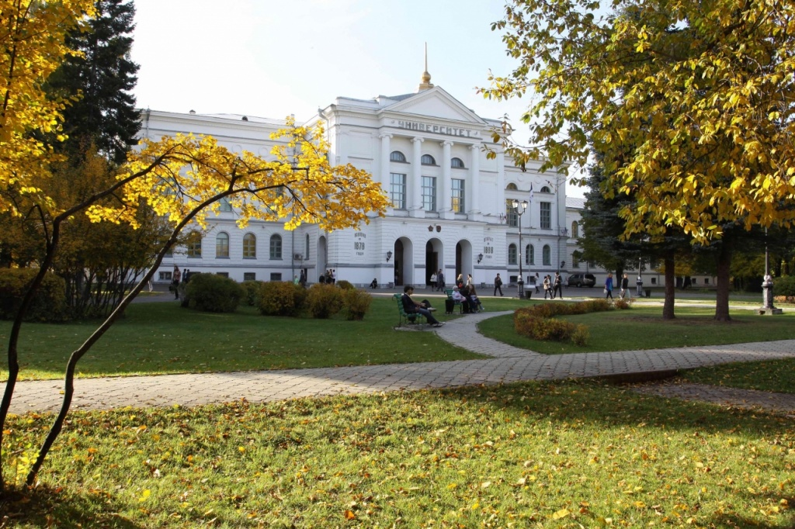

Mirasımız
Tomsk Devlet Üniversitesi
Sibirya’nın en eski ve en önemli üniversitelerinden biridir.
1878 yılında kurulan üniversite, zengin tarihi ve etkileyici mimarisiyle dikkat çekmektedir.
Üniversite, tarihi mimarisi ve öğrenci hayatı ile Tomsk şehrinin kültürel mirasının önemli bir parçasıdır.
- Sibirya'nın ilk üniversitesidir
- 1878 yılında kurulmuştur
- Tarihi mimarisi ile ünlüdür
- Tomsk şehrinin kültürel simgelerinden biridir

| Bilgi | Detay |
|---|---|
| Kuruluş Yılı | 1878 |
| Şehir | Tomsk |
| Ülke | Rusya |
| Dünya Sıralaması | Rusya'nın önemli üniversiteleri arasında yer almaktadır |
| Erasmus Programı | Evet, uluslararası değişim programları bulunmaktadır |
| Yabancı Öğrenciler | Birçok ülkeden yabancı öğrenci kabul edilmektedir |
| Öğrenci Sayısı | Yaklaşık 20.000+ |
| Özellik | Sibirya'nın ilk üniversitesi |